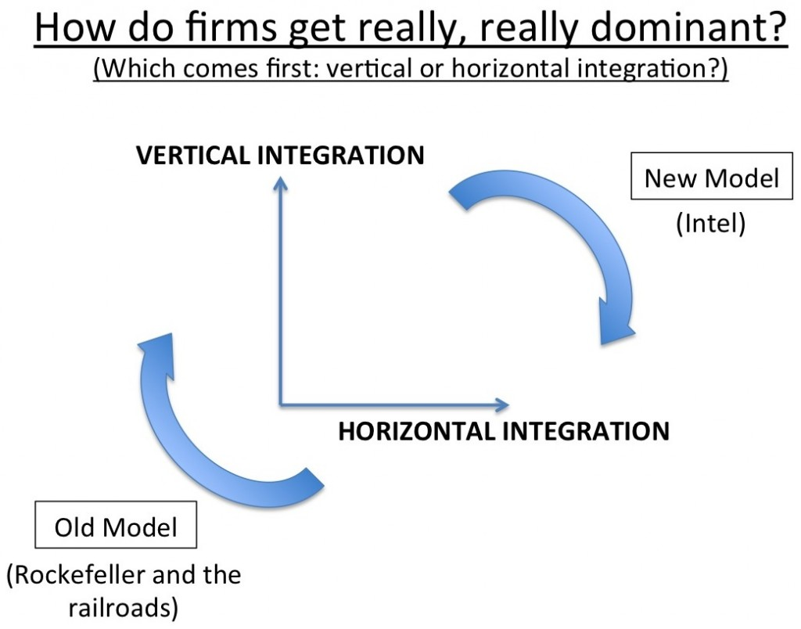

Sole-Sourcing the Intel 386 (CMC, Wednesday, Week 10)
coming-of-managerial-capitalismyear-twoIn 1987, a smallish component supplier called Intel unveils the 80386 processor and --- in a break with industry tradition --- announces that it will not license the chip for manufacture by other second-source suppliers (AMD, National Semi, etc.). IBM, the colossus that invented the personal computer, decides not to buy initially.
Intel goes on to build a massive franchise. IBM gets crushed by clones and eventually exits the personal computer business altogether in 2005. Huh?
Value migration: IBM to Intel
IBM: closed system, no interoperability, outsourced components, bets on BIOS (bad decision)
Intel: second-sourcing to boost sales of architecture (becomes increasingly unfeasible at R&D costs rise), backwards-compatibility, continuous investment in R&D
Classic story of modularity and interdependence (see BSSE).
Was this inevitable? Probably not.
Uncertainty over use (Apple ad: "What would you do with a personal computer?")
Uncertainty over performance-defining sub-component
Changing IP protections
Purposeful decision by Intel to license initially and convince competitors to stop R&D investment
Operational challenges for Intel in meeting demand themselves (fabs = high fixed cost, long lag to build)
Semi-conductor slump begins in 1984 --- Intel has been performing terribly for two consecutive years; might want to avoid "bet the company" decisions
Larger observation: Intel and Microsoft represent a shift from the old model of how firms build massive monopolies.

{kind=link}
Rockefeller starts by dominating refining --- one part of the value chain in oil (horizontal integration). Then expands into marketing, transport, exploration, etc., because it makes sense --- Standard Oil can reap all the benefits of improvement in these steps.
Intel starts by integrating across design, manufacture, and even branding/marketing of processors (AMD advertises Intel architecture). Then lays waste to all competitors in manufacture.
Why?
-- Change in customer profile (consumers buy on brand)
-- Democratization of capital (this strategy needs $ upfront)
-- Shift to knowledge goods, where scaling up is easier and cheaper --- if you've got the chip everyone wants, it's not impossible to rapidly double production and double unit sales. Compare to Standard Oil, which cannot quickly double its output.
-- Related to knowledge goods, intellectual property protection conveys government-sanctioned horizontal monopoly.
-- Network effects/demand-side economies of scale. Intel processors are much more valuable to a consumer if everyone else uses them and writes code for them. My oil isn't inherently any more useful if my neighbor buys from the same refiner.
(Push-back: Did Intel really go vertical first? I'm not sure --- it seems like they went horizontal first, establishing dominance in processor design/R&D before they made a play to be sole-suppliers.)